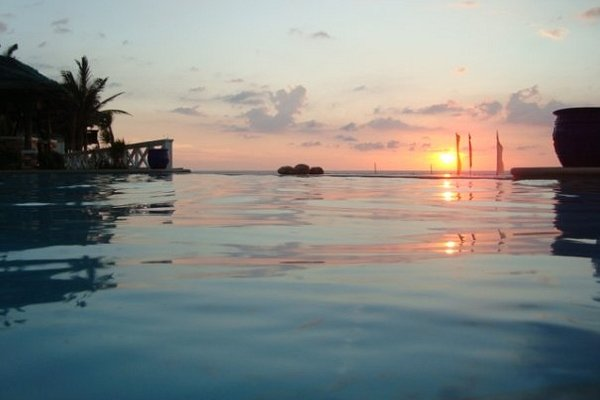

Patar Beach is a scenic public beach in Bolinao, Pangasinan, on the western coast of Luzon, Philippines. Known for its golden-white sand, crystal-clear waters, and dramatic sunsets over the West Philippine Sea, it offers a tranquil escape within driving distance of Metro Manila.
Landscape and Natural Features
Patar Beach stretches along the northwestern edge of the Lingayen Gulf, opening to the West Philippine Sea. Its golden sand is fine and soft underfoot, creating a perfect setting for walking, sunbathing, or simply relaxing by the shore.
The coastline is punctuated with striking limestone rock formations, sculpted over centuries by wind and tides, giving the beach a rugged yet picturesque character. The calm, shallow waters make the beach ideal for swimming and family recreation.
Sunsets are especially striking, casting vivid colors across the horizon and highlighting the sea cliffs and palm-lined shores. The combination of sand, rocks, and tropical vegetation gives the beach its unique charm.

Activities and Attractions
Visitors to Patar Beach can enjoy swimming, sunbathing, and exploring the rocky outcrops at the southern end of the main cove. Inland, natural pools such as the Enchanted Cave and Wonderful Cave provide freshwater experiences, while nearby Bolinao Falls offers a forested retreat.
Historic landmarks add cultural interest to the area. The Cape Bolinao Lighthouse, built in 1903, provides panoramic views of the coastline and the open sea.
Small eateries run by local communities serve fresh seafood, while nipa huts and cottages are available for day use. The area's natural beauty and variety of attractions make it appealing for both adventure seekers and those looking to unwind.
Accommodations and Amenities
Lodging along Patar Beach ranges from simple bamboo cottages and family-run inns to midrange resorts like Treasures of Bolinao and Puerto Del Sol. These accommodations maintain the rustic charm of the area while providing practical comfort.
Facilities are limited but functional, encouraging a closer connection with the natural setting rather than a resort-heavy experience. Essential services such as parking and tricycle transport from Bolinao town proper make the beach accessible.
Its affordability and scenic appeal make Patar Beach suitable for families, groups, and solo travelers looking for a relaxed coastal getaway.

Environmental Significance
Patar Beach is one of Pangasinan's best-preserved coastal areas, supported by local conservation programs that promote responsible tourism. Regular beach cleanups and educational initiatives encourage visitors to respect the environment and maintain the area's natural appeal.
Environmental fees and awareness programs support the protection of marine and coastal ecosystems, ensuring that sand, water, and wildlife remain healthy and accessible for future generations.
By balancing tourism with conservation, Patar Beach continues to serve as both a recreational destination and a model for sustainable coastal tourism in the region.